Олимпиадная биология
Что такое
биология?
От олимпиадных задач — к пониманию жизни
Лекция
01
Введение
Олимпиадная биология
От олимпиадных задач — к пониманию жизни
Тимофей Рыко
Формат подготовки
Турнир юных биологов
Энтропия и информация
Призёр заключительного этапа ВсОШ по биологии
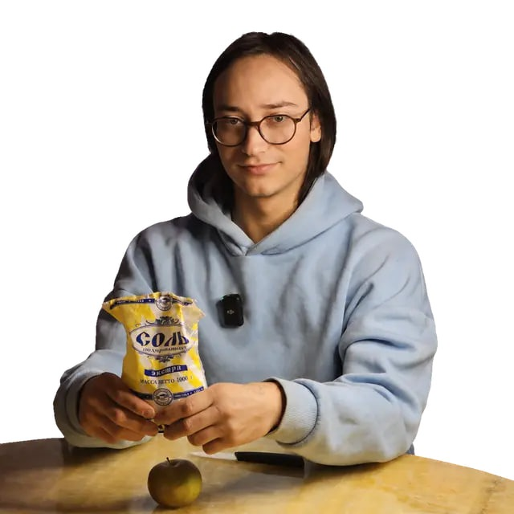
Поступление без вступительных испытаний
100 баллов за профильное испытание (ЕГЭ)
Дополнительные конкурсные баллы
Важно проверять правила поступления на сайте каждого конкретного ВУЗа!
класс
Диплом по биологии за 10-й класс учитывается при поступлении в РНИМУ Пирогова.
Право получают и победитель, и призёр перечневой олимпиады I, II или III уровня.
Правила приёма 2026: олимпиада из перечня вуза, профильная программа, ЕГЭ по биологии от 75 баллов.
Темы и типы заданий частично пересекаются. В течение сезона нужно участвовать в большом количестве олимпиад.
Каждая олимпиада даёт опыт и помогает готовиться к следующей.
Информация о датах будет появляться в группе.
До 21 сентября, 14:00 мск
Все источники и материалы будут в беседе и на диске
26 тем
Стратегия поступления. Термодинамика, энтропия и информация. Естественный отбор и эволюция.
Атомы, электронные оболочки, связи и реакции. Вода, кислотность, буферы, ΔH, ΔG и ATP.
Мембраны, градиенты, цитоскелет, органеллы, ядро, рибосомы, эндосимбиоз и клеточный цикл.
Химия углерода, ОВР, ферменты, катаболизм, анаболизм и регуляция метаболизма.
Мендель, гены и аллели, генотип и фенотип, мейоз, вероятность, комбинаторика и решётка Пеннета.
Мутации, наследственные заболевания, анеуплоидии, определение пола, сцепление и генетические карты.
Взаимодействие аллелей и генов, правило Харди–Вайнберга, отбор и генетический дрейф.
Происхождение жизни, РНК-мир, репликация, репарация, транскрипция, трансляция и регуляция экспрессии.
Экология, виды отбора, история Земли, эукариоты, кладистика, водоросли и грибы.
Симметрия, зародышевые листки, полости тела, эмбриология, кембрийский взрыв и типы беспозвоночных.
Рыбы, тетраподы, амниоты, млекопитающие и эволюция человека.
Потенциал действия, синапс, гормоны, рецепторы, сигнальные пути, цитология и гистология.
Органы чувств, регуляция, кровь, иммунитет, дыхание, пищеварение, выделение и опорно-двигательный аппарат.
Растительная клетка, выход на сушу, высшие растения, сосудистые зоны, стелы и цветковые.
Фотосинтез, свет, пигменты, пластиды, электрон-транспортная цепь, фотодыхание, C4 и CAM.
Растительный метаболизм, вторичные метаболиты, фитогормоны, стресс и защита.
Водный потенциал, устьица, минеральное питание, фоторецепторы, фотопериодизм и развитие цветка.
Микроскопия, вскрытия, срезы, определители, молекулярные методы, биоинформатика и микробиология.
Пигменты, качественные реакции, водный потенциал, плазмолиз и жизнеспособность семян.
Корень, стебель, стелы, лист и нестандартные срезы.
Единицы, растворы, концентрации, буферы, ферментативная кинетика, пищевые цепи и экологические пирамиды.
Комбинаторика, скрытые марковские модели, рестриктазы, плазмиды, ПЦР и электрофорез.
Секвенирование, форматы файлов, выравнивание, геномика, SNP, GWAS и транскриптомика.
Запутанные условия, условная вероятность и комплексные задачи.
Анализ условия, структура ответа и дизайн эксперимента.
Покровы, скелет, мышцы, системы органов, нервная система и органы чувств.
Исследование и дискуссия
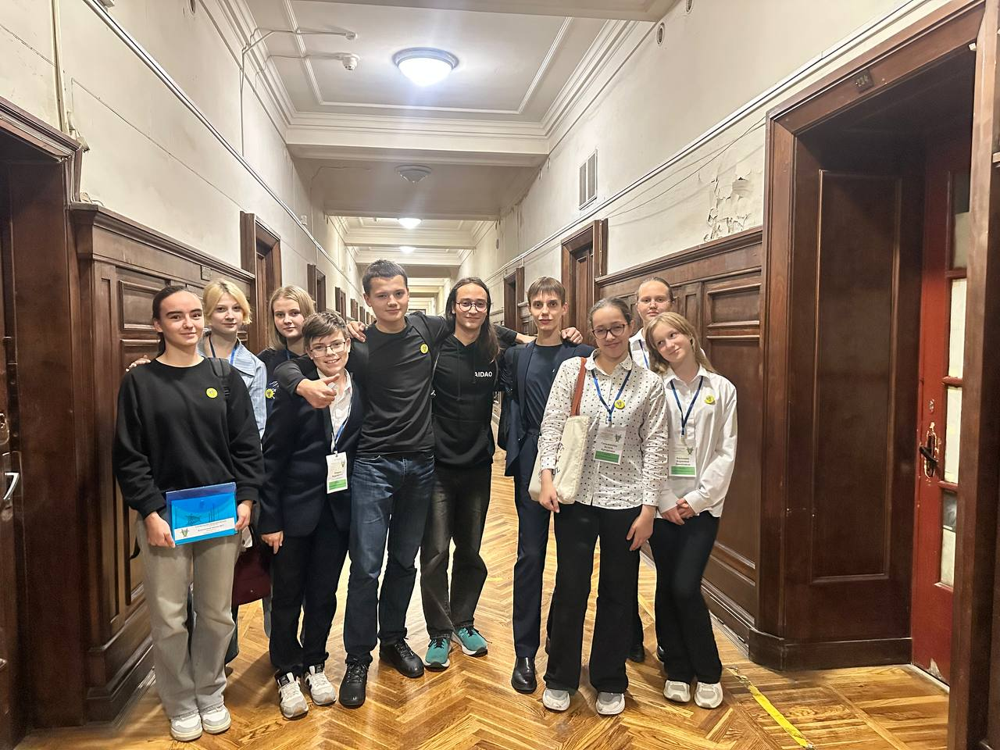
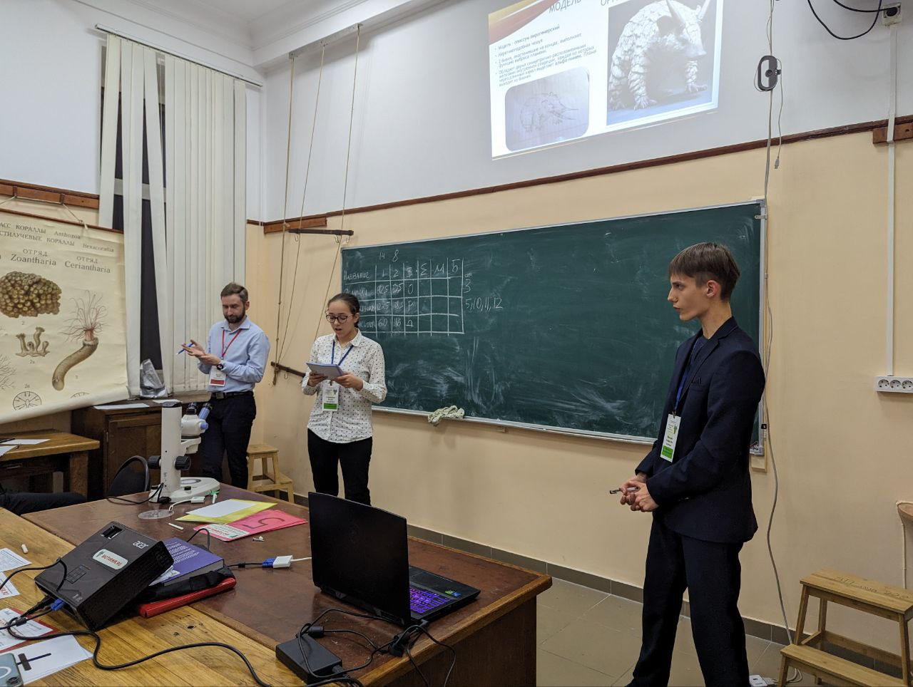
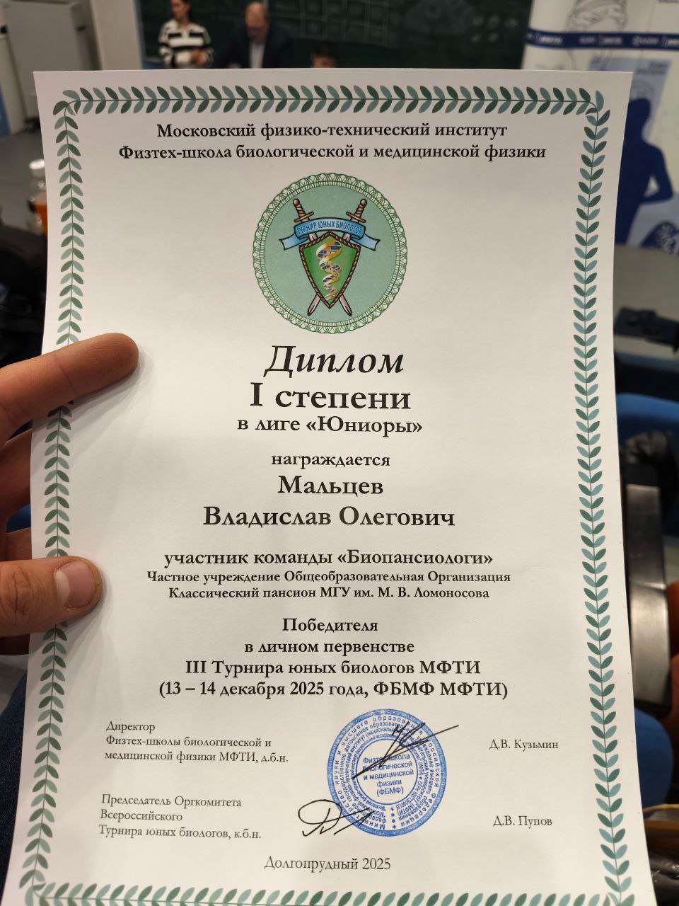
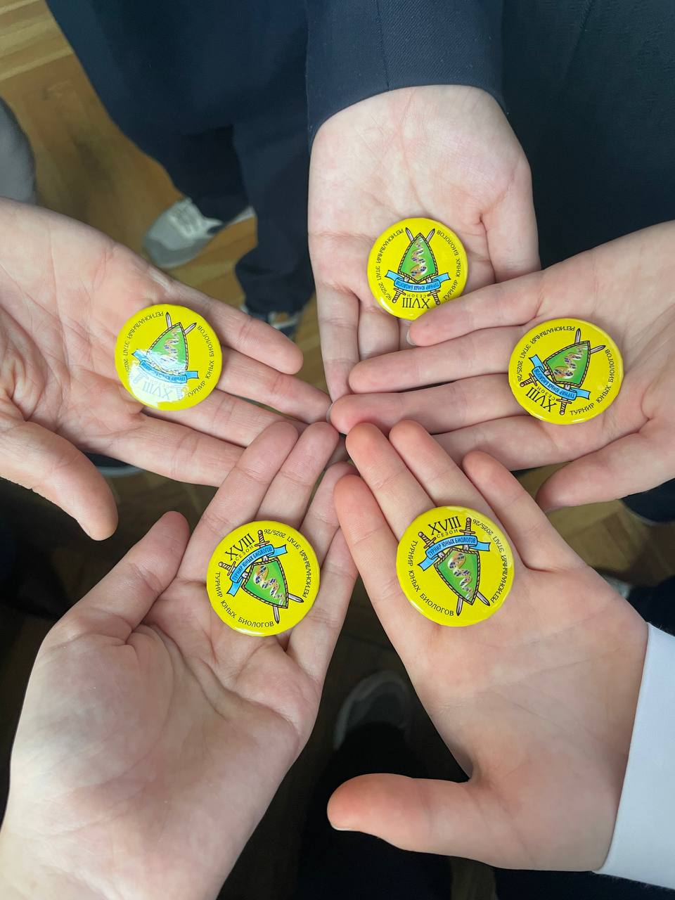
От признака к эволюции
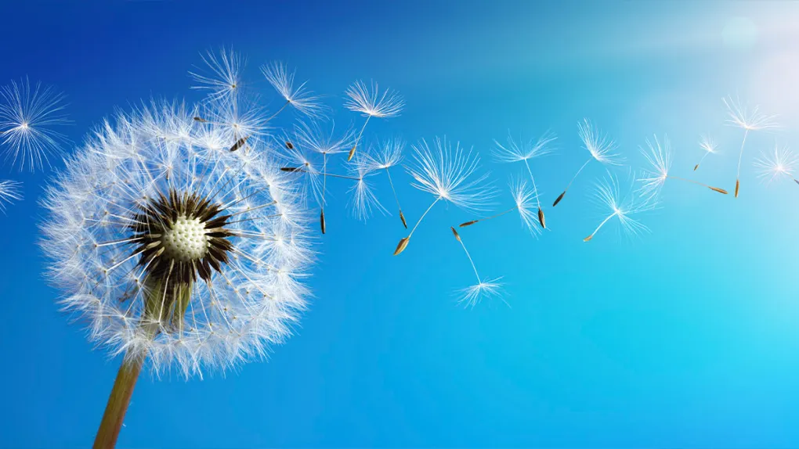
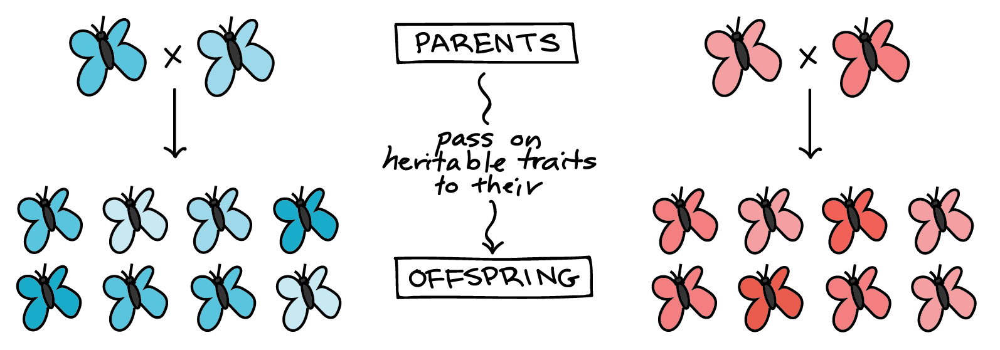
Особи одного вида отличаются друг от друга.
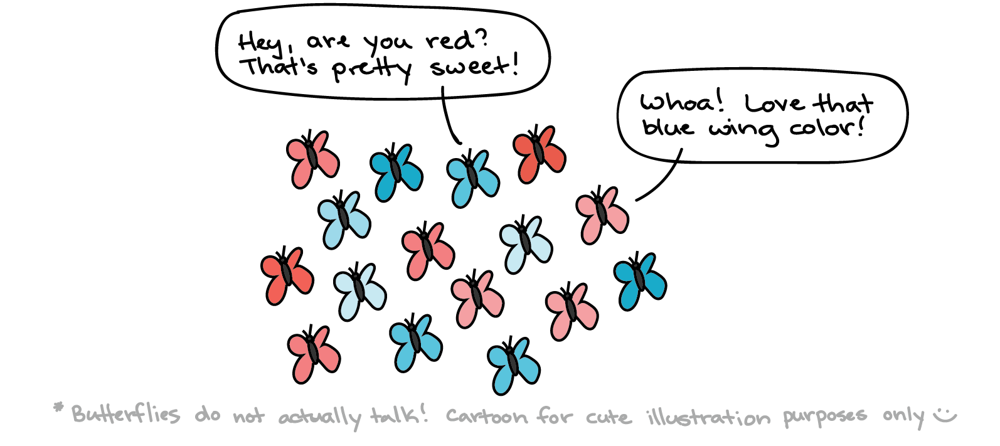
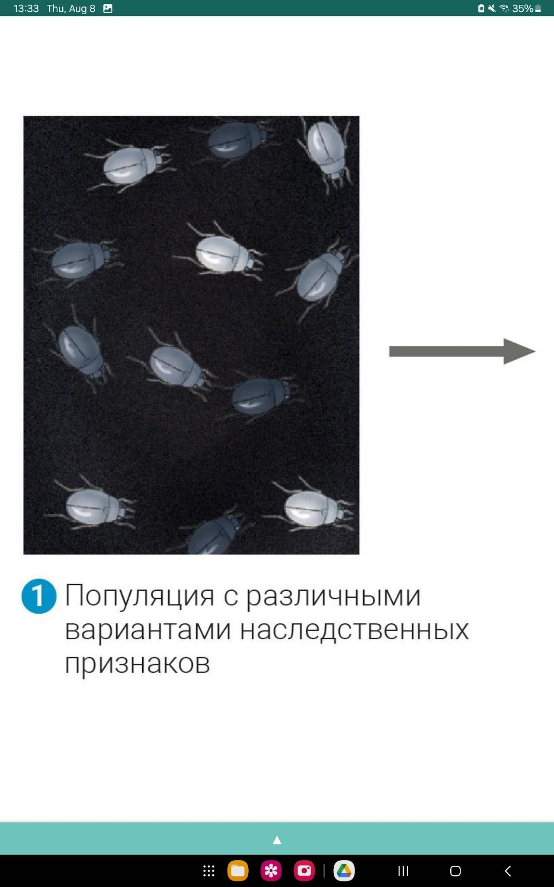
1. Популяция с различными вариантами наследственных признаков
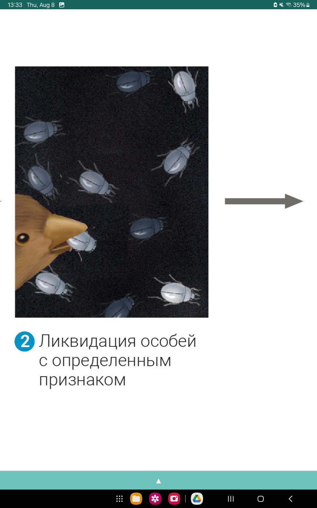
2. Ликвидация особей с определённым признаком
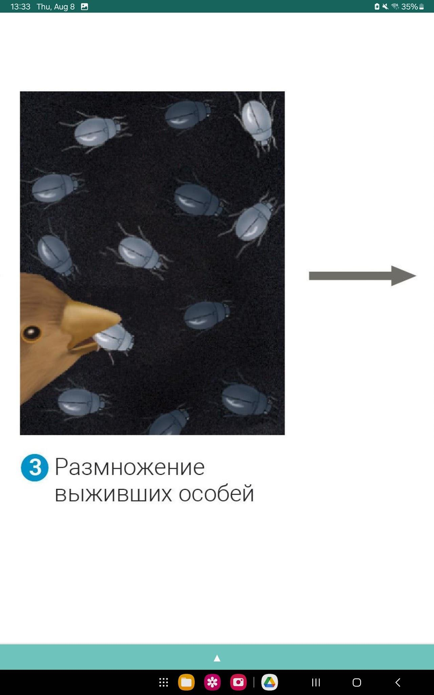
3. Размножение выживших особей
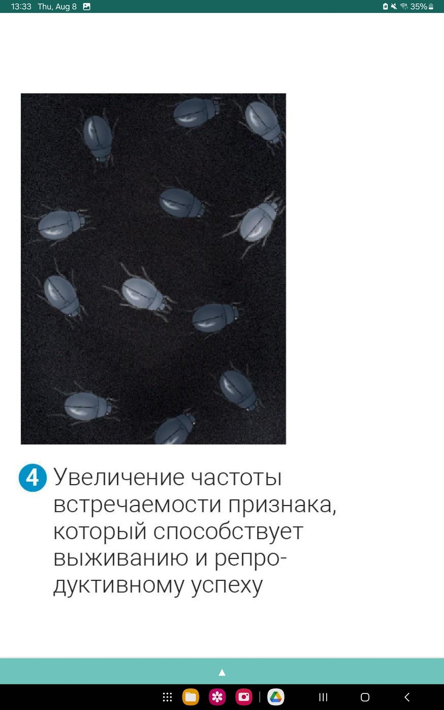
4. Увеличение частоты встречаемости признака, который способствует выживанию и репродуктивному успеху
Среда влияет на выживание и размножение разных вариантов. Частоты вариантов меняются в следующих поколениях.
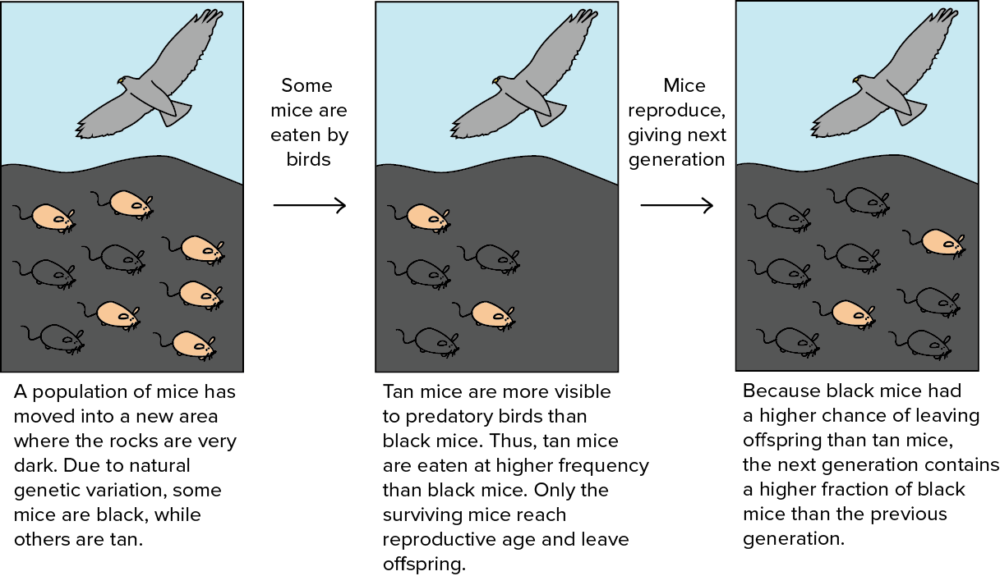
Наследуемые признаки, повышающие репродуктивный успех, распространяются в популяции.
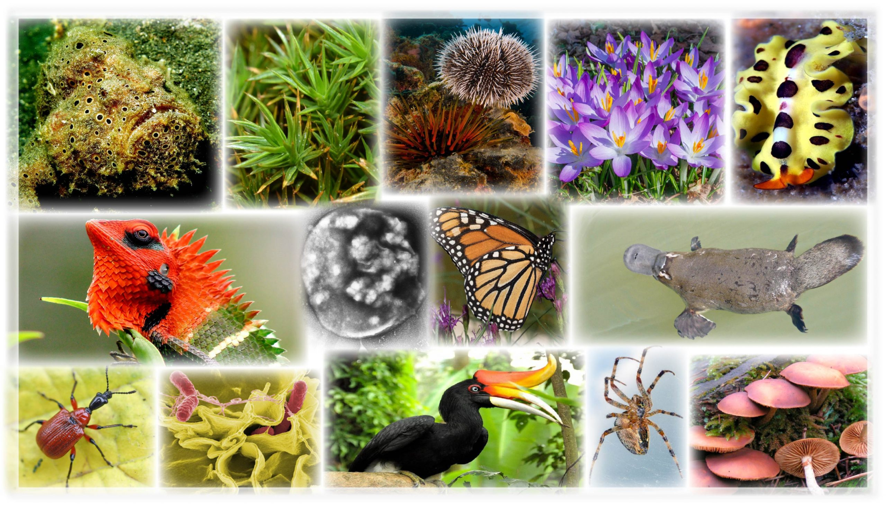
Физические основы жизни
Энтропия связана с числом микросостояний, соответствующих одному наблюдаемому состоянию системы.
Один и тот же идеальный газ. Объём и число частиц постоянны.
Медленнее движение частиц
Быстрее движение частиц
Больше доступных микросостояний → выше энтропия
Организм поддерживает внутренний порядок, получая энергию и увеличивая энтропию окружающей среды.
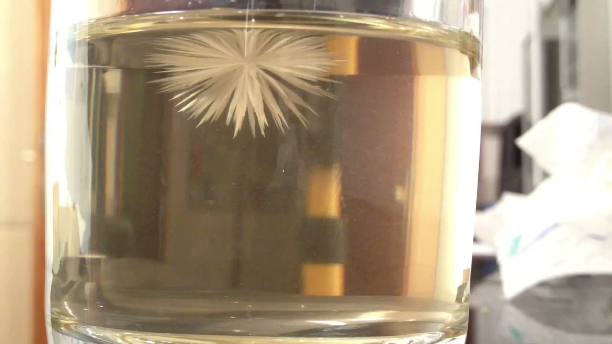
Peter L. · Wikimedia Commons · CC BY 3.0
Фрагмент 0–37 с, без звука
Кристалл начинает расти от небольшого центра. В аналогии с жизнью это первая живая клетка.
Живые организмы создают свои копии. Копии могут немного отличаться друг от друга.
Варианты, которые создают больше жизнеспособных копий, со временем встречаются чаще.
Определяет возможные процессы и энергетические затраты.
Живые организмы создают свои копии. Копии наследуют признаки и иногда отличаются.
Изменяет частоты наследуемых вариантов в популяции.
Поток энергии позволяет поддерживать порядок; естественный отбор меняет частоты наследуемых вариантов.
Мера беспорядка
Чем больше возможных микросостояний у системы, тем выше её энтропия
Размножение и наследственность
Изменчивость
Ключевой биологический процесс, который возможен за счёт этих двух свойств. Движущая сила эволюции.
Упорядоченная фаза вещества, содержащая информацию, которая копируется в ходе размножения (напоминает кристалл).